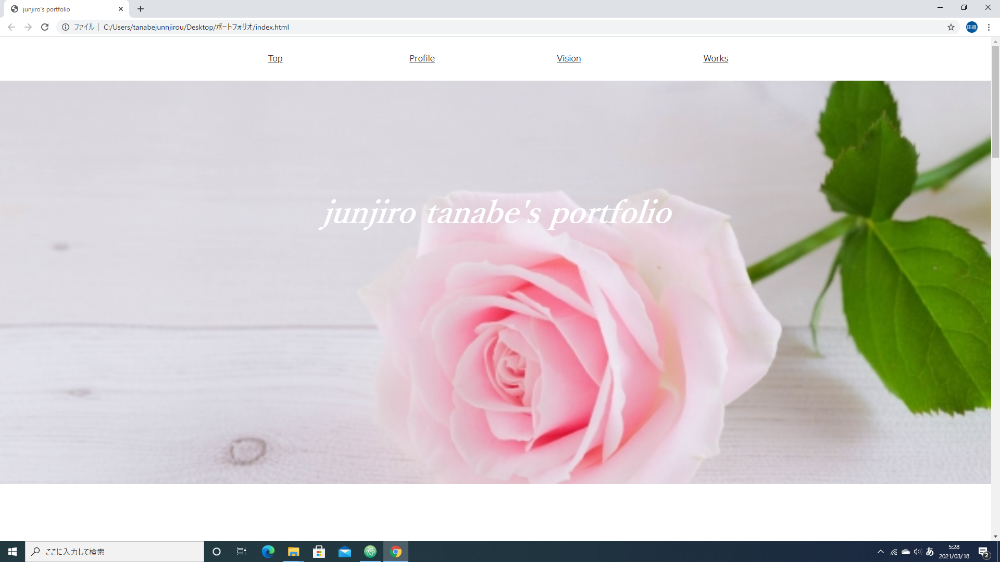

Profile
名前：田邉潤次郎
血液型：A型
出身地：岡山県
経歴：創価大学経済学部経済学科卒業見込み
ゼミ：公共経済学のゼミに所属
主にゼミでは統計学を勉強したり、介護難民問題という社会問題について経済的な観点から研究をしています
資格：ITパスポート試験合格
現在は情報技術者試験に向けて勉強中
スキル：HTML、CSSやpythonを中心に学習しています
趣味：将棋、占い、お笑いコント鑑賞（好きなお笑い芸人、ジャルジャル）
Vision
私のキャリアビジョンはデータサイエンティストとしての経験を積み、それから徐々に幅広いスキルを身に着けたジェネラリストとして活躍したいと考えています。 その理由としては、自分の過去の趣味や勉強における経験から、自分は好奇心旺盛で広範囲にわたる知識に触れることが好きであると考えているからです。 上流工程から下流工程までの精通を目指し、IT業界に関するあらゆる方面で多くの知識と多岐にわたる技術を吸収していきたいと考えています。 また、そのような自己実現を達成すると同時に、サービス視点も意識して、どのようなプロダクトでも通用する優れた人材となることを目標としています。 積極的に勉強会などに参加をし、優れたジェネラリストになるために幅広い知識を吸収していきたいと思います。
Works
ポートフォリオサイト/HTML,CSS
当サイトを制作しました。
ウェブスクレイピング/python
HTMLファイルを解析し情報を抽出。
日経平均高配当株50指数連動型ETFの株価情報を取得しました。
こちらのサイトを利用させていただきました＝＞株式投資メモ(https://kabuoji3.com/)
データ分析/python
日経平均株価と通貨価値（円）の関係性について分析しました。
回帰直線と相関係数を表示